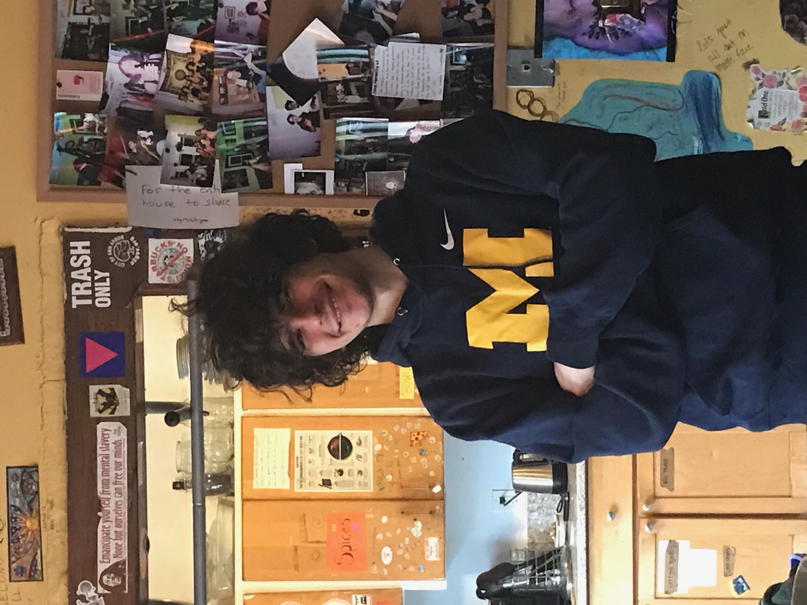
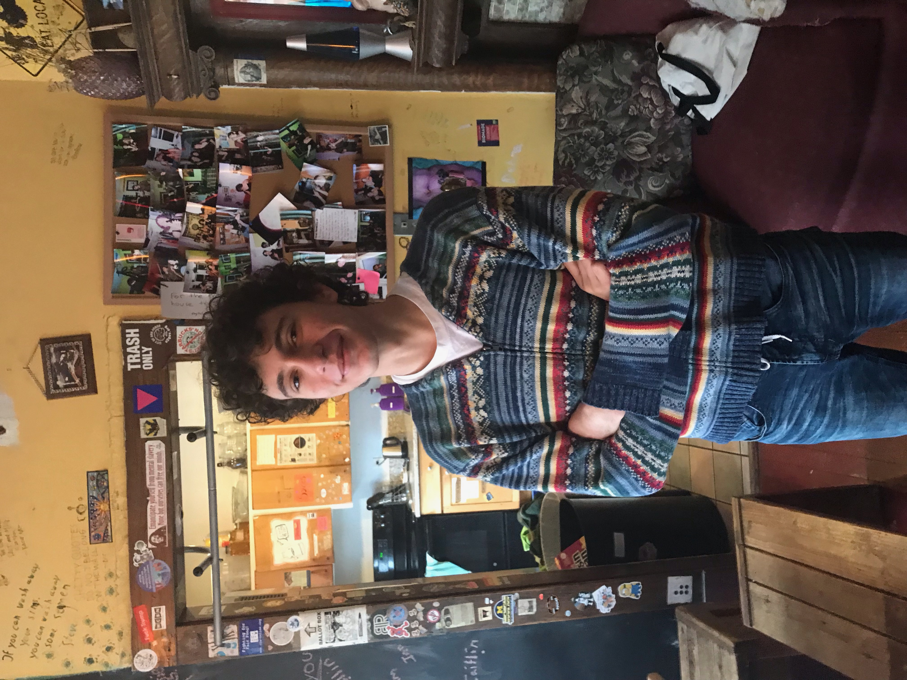

Debs Winterproofing 2020!
Debs Winterproofing 2020!
The sustainability stewards
Because Debs is a sustainability focused house, we have a special position to help ensure that the house lives up to our goals. This position is the sustainability steward!The sustainability steward(s):
- Educate the house about issues of sustainability
- Help limit the house's energy use
- Take care of the trash and compost
- Identify areas of wasted resources and work to rectify that waste
- Design a sustainability project to work on each semester!
Our sustainability stewards this semester are Ben Rose and Dylan Siewert. Look below to check out their bios!
Ben:

About Ben:
Hi! My name's Ben!I wanted to become the sustainability steward because I'm majoring in environmental science and I wanted to take what I had learned and use it to make a difference in my house.
Hopefully Debs can act as a case study for what works and what doesn't work to help insulate a home and make it more winterproof!
Dylan:

About Dylan:
Hi my name's Dylan!I wanted to be a sustaibility steward because I was interested in the social justice theme of Debs and sustainability is a part of social justice that I really enjoy.
My old neighborhood was really into environmental sustainability so I want to bring that energy into Debs!